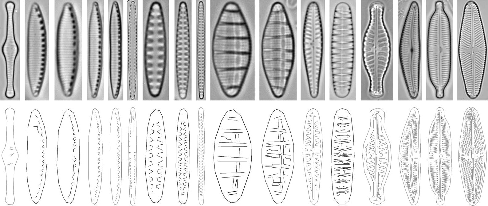
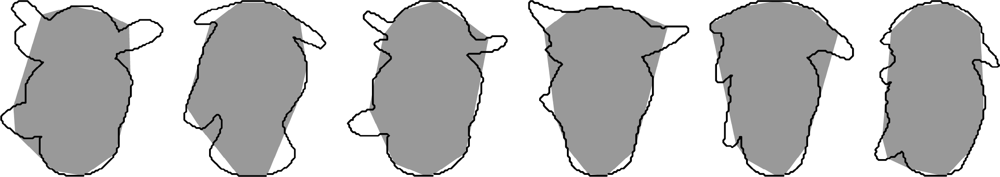
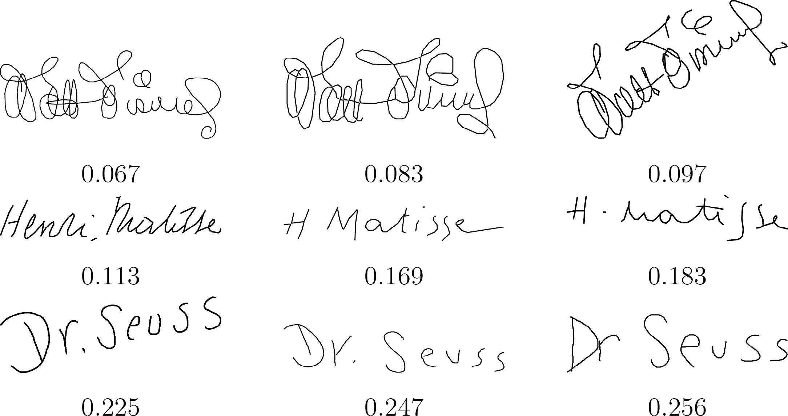
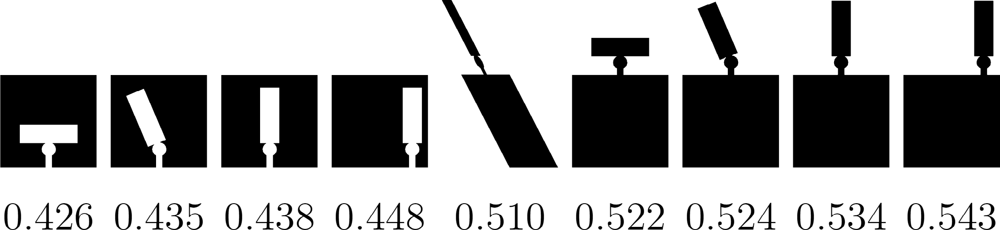

With colleagues I have developed a variety of shape measures (see also here for some of them). In particular, convexity is widely used in many applications, and four different approaches are given here.
The first is a "boundary-based" measure, which means that it is more sensitive to boundary defects from convexity than the standard "area-based" convexity measure. It is simple to compute, being based on just the perimeter of the shape and the perimeter of its minimal enclosing rectangle. Moreover, it is also possible to analyse shapes consisting of multiple polygons, such as the diatom shapes below which contain internal detail. The figure shows the diatoms ranked in decreasing convexity by computing the convexity of both their boundaries and their internal contours.

The goal of the second convexity measure was to treat intrusions and protrusions equally, as compared to the standard convex hull based approach that is much more sensitive to protrusions. This was achieved by replacing the convex hull with a "robustified" version which we defined as the convex polygon that maximised the overlap with the input shape. Examples are shown below of the input boundaries overlaid with the best convex polygon, and the shapes are ranked in increasing convexity.

Like our first approach, the third convexity measure can be applied to shapes with partially extracted boundaries consisting of several disconnected curve segments. It is based on randomly sampling pairs of points on the curves and testing for the proportion that belong to the curve. It enables the three signatures, each of which have been written which variable numbers of segments, to be differentiated (the numbers under each shape are the convexity values).

The fourth convexity measure also takes a probabilistic approach. It incorporates both area-based and boundary-based information, and and estimates the probability that for randomly chosen points A and B from the boundary of S all points from the line segment [AB] also belong to S, under the assumption that A and B are chosen uniformly along the boundary of S. Some test shapes ranked by convexity are shown below.

More details are given in:
return to Paul Rosin's homepage